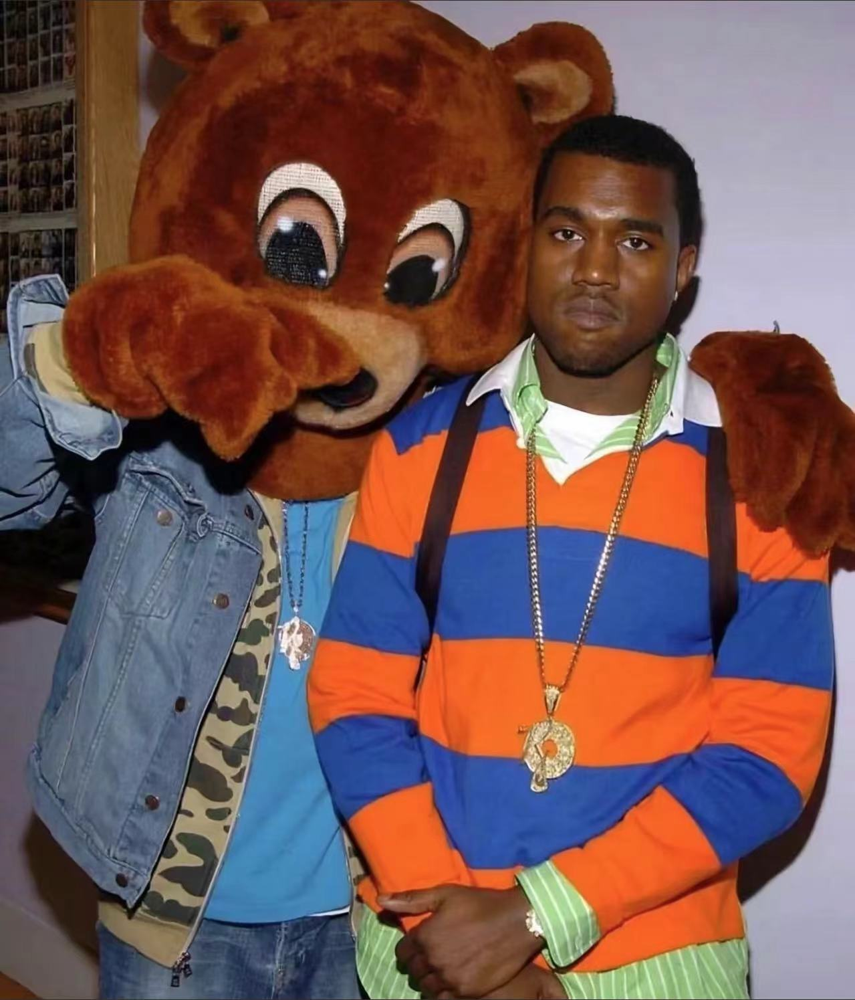

Ye
坎耶·维斯特（Ye ），1977年6月8日出生于美国乔治亚州亚特兰大，美国说唱男歌手、音乐制作人、商人、服装设计师。
2000年开始担任音乐制作人 。2004年发行首张录音室专辑《The College Dropout》 。2005年入选《时代周刊》“百大人物” ，同年推出第二张录音室专辑《Late Registration》 。2007年发行的专辑《Graduation》标志着“辍学熊”三部曲的完结 。2008年发行的专辑《808's & Heartbreak》中对Auto-Tune进行了大量使用 。2010年发行的专辑《My Beautiful Dark Twisted Fantasy》被多家乐评机构打上了满分 。2011年推出与JAY-Z合作的专辑《Watch the Throne》 。2013年推出第六张录音室专辑《Yeezus》 。2015年再次入选《时代周刊》“百大人物” 。2016年发行录音室专辑《The Life of Pablo》 。2018年录音室专辑《Ye》正式发行 ，同年与卡迪小子联合推出专辑《KIDS SEE GHOSTS》 。2019年推出录音室专辑《Jesus Is King》 。2021年发行个人专辑《Donda》 ，同年打破制作最多公告牌百强单曲榜冠军嘻哈歌曲的制作人纪录 。2022年个人专辑《Donda 2》在Stem Player上独家发布 ，同年追平嘻哈歌手格莱美奖获奖最多的纪录 ，同年因“反犹”言论而遭抵制 。2024年，与泰·朵拉·尚共同发行专辑《Vultures》 。
